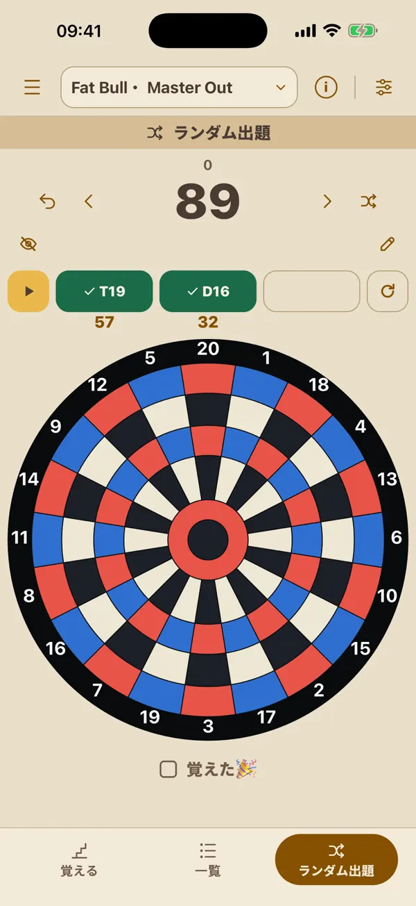
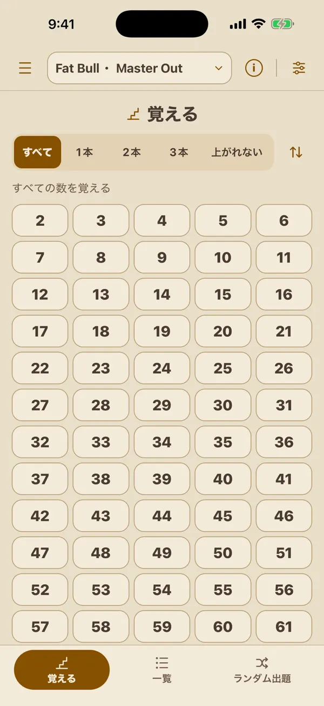
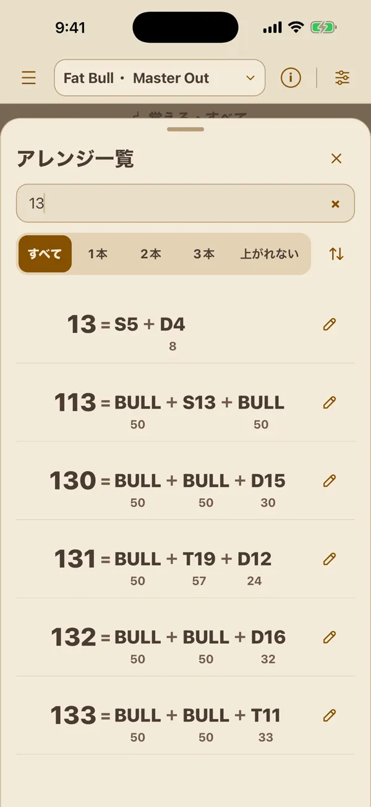
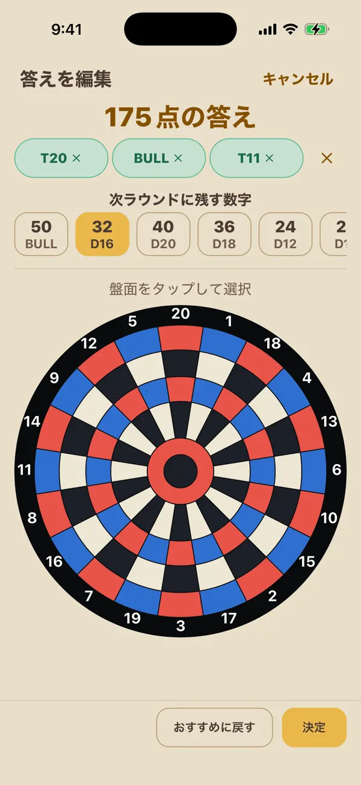
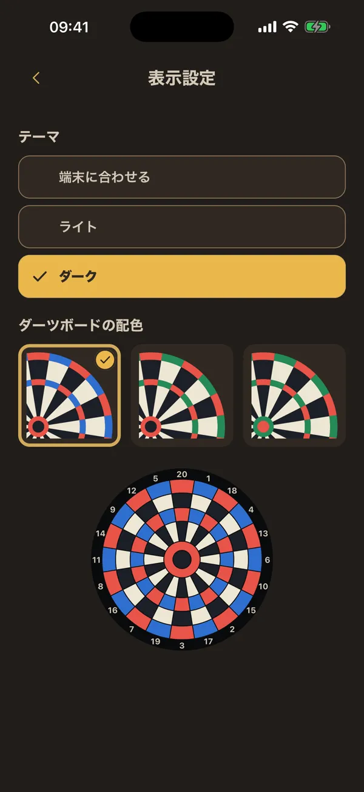

01
ランダム出題
残り点数がランダムに出題されます。ダーツボードの数字をタップして狙う場所を選び、その場で答え合わせ。答えの表示・非表示も切り替えられます。

見て、真似て、身につける
ダーツのフィニッシュアレンジを覚えるための練習アプリです。
上がり方に加えて、今のラウンドで上がれないときに、次のラウンドで上がりやすい数字を残す方法も練習できます。
App Store listing: Darts Finish Trainer · In-app name: Darts Finish
A practice app for learning darts checkouts.
Learn how to finish and, when you cannot check out this turn, how to leave a score that is easier to finish on your next turn.
一款帮助你记住飞镖收镖路线的练习应用。
学习如何完成收镖；如果这一轮无法结束，也能练习如何留下更容易在下一轮收镖的分数。
App Store 顯示名稱：Darts Finish 飛鏢練習 · App 內名稱：Darts Finish
一款幫助你記住飛鏢結鏢路線的練習 App。
學習如何結鏢；如果這一輪無法結束，也能練習如何留下更容易在下一輪結鏢的分數。
Eine Übungsapp, mit der du dir Checkout-Wege beim Darts merken kannst.
Lerne, wie du ausmachst und wie du, wenn das in dieser Aufnahme nicht gelingt, einen gut spielbaren Rest für die nächste Aufnahme stehen lässt.
Nombre en App Store: Darts Finish Cierres (España) / Darts Finish (México) · En la app: Darts Finish
Una app de práctica para memorizar los cierres en dardos.
Aprende a cerrar y, si no puedes hacerlo en este turno, a dejar una puntuación más fácil de cerrar en el siguiente.
Nom sur l’App Store : Darts Finish Entraînement · Dans l’application : Darts Finish
Une application d’entraînement pour mémoriser les finitions aux fléchettes.
Apprends à terminer un leg et, si tu ne peux pas finir ce tour-ci, à laisser un score plus facile à finir au tour suivant.
Naam in de App Store: Darts Finish: 501 Uitgooien · In de app: Darts Finish
Een oefenapp om dartcheckouts te onthouden.
Leer hoe je uitgooit en, als dat deze beurt niet lukt, hoe je een restscore overhoudt die je in de volgende beurt makkelijker kunt uitgooien.
Nome su App Store: Darts Finish: 501 Chiusure · Nell’app: Darts Finish
Un’app di allenamento per memorizzare le chiusure a freccette.
Impara a chiudere e, quando non puoi farlo nel turno attuale, a lasciare un punteggio più facile da chiudere nel turno successivo.
Nome na App Store: Darts Finish: Fechamentos · No app: Darts Finish
Um app de treino para memorizar as combinações de fechamento nos dardos.
Aprenda a fechar e, quando não for possível nesta rodada, a deixar uma pontuação mais fácil de fechar na próxima.
Nome na App Store: Darts Finish: 501 Fechos · Na aplicação: Darts Finish
Uma aplicação de treino para memorizar as combinações de fecho nos dardos.
Aprende a fechar e, quando não for possível nesta jogada, a deixar uma pontuação mais fácil de fechar na seguinte.
Aplikacja do ćwiczenia i zapamiętywania sposobów kończenia lega w darcie.
Naucz się, jak zakończyć leg, a gdy nie możesz tego zrobić w tej kolejce, jak zostawić wynik łatwiejszy do zakończenia w następnej.
다트 체크아웃 경로를 익히기 위한 연습 앱입니다.
이번 라운드에 마무리하는 방법과 마무리하지 못할 때 다음 라운드에 더 쉽게 끝낼 수 있는 점수를 남기는 방법을 연습할 수 있습니다.
Ứng dụng luyện tập giúp ghi nhớ các cách kết thúc ván darts.
Học cách kết thúc ván và, khi chưa thể kết thúc ở lượt này, cách để lại điểm dễ kết thúc hơn ở lượt sau.
ชื่อใน App Store: Darts Finish ฝึกปาลูกดอก · ชื่อในแอป: Darts Finish
แอปฝึกจำวิธีปิดเกมปาลูกดอก
เรียนรู้วิธีปิดเกม และหากรอบนี้ยังปิดไม่ได้ ก็ฝึกเหลือแต้มที่ปิดได้ง่ายขึ้นในรอบถัดไป
En övningsapp för att lära dig utgångar i dart. Lär dig hur du avslutar ett leg och, när du inte kan gå ut på den här omgången, hur du lämnar en poäng som är lättare att gå ut på nästa gång.
En øveapp til at lære at lukke i dart. Lær, hvordan du lukker, og hvordan du efterlader en score, der er lettere at lukke på næste tur, når du ikke kan lukke på denne tur.
Aplikace na procvičování zavírání v šipkách. Naučte se zavřít a také si při tahu, ve kterém zavřít nemůžete, nechat skóre, které půjde v příštím tahu zavřít snadněji.
Gyakorlóalkalmazás a darts kiszállók megtanulásához. Megtanulhatod, hogyan szállj ki, és ha ebben a körben ez nem sikerül, hogyan hagyj magadnak a következő körben könnyebben kiszállható pontszámot.
Приложение для тренировки завершения легов в дартсе. Узнайте, как закрыть счёт, а если в этом подходе это невозможно — как оставить более удобный остаток для следующего подхода.
’n Oefentoepassing om pylgooi-uitgooie aan te leer. Leer hoe om uit te gooi en, wanneer jy nie in hierdie beurt kan uitgooi nie, hoe om ’n telling oor te laat wat makliker is om in jou volgende beurt uit te gooi.
Harjoittelusovellus dartsin lopetusheittojen oppimiseen. Opi lopettamaan peli ja, jos et pysty lopettamaan tällä vuorolla, jättämään pistemäärä, josta on helpompi lopettaa seuraavalla vuorolla.
Isang app sa pagsasanay para matutuhan ang pag-checkout sa darts. Alamin kung paano tapusin ang leg at, kung hindi ka makapag-checkout sa turn na ito, kung paano mag-iwan ng score na mas madaling tapusin sa susunod na turn.
डार्ट्स में चेकआउट के रास्ते याद करने में आपकी मदद करने वाला अभ्यास ऐप। फिनिश करना सीखें; अगर इस बारी में फिनिश नहीं कर सकते, तो अगली बारी के लिए आसान स्कोर छोड़ने का अभ्यास करें।
En øvingsapp som hjelper deg å huske veier til utsjekk i dart. Lær å avslutte; hvis du ikke kan avslutte denne omgangen, øv på å etterlate en poengsum som er lettere å avslutte neste omgang.
Aplikasi latihan untuk membantu anda menghafal laluan penamat dalam dart. Pelajari cara menamatkan permainan; jika anda tidak dapat menamatkannya pada giliran ini, berlatihlah meninggalkan skor yang lebih mudah untuk ditamatkan pada giliran seterusnya.
Dartta bitiriş yollarını ezberlemenize yardımcı olan bir alıştırma uygulaması. Nasıl bitireceğinizi öğrenin; bu turda bitiremiyorsanız sonraki turda bitirmesi daha kolay bir skor bırakmayı çalışın.
O aplicație de exersare care te ajută să memorezi variantele de închidere la darts. Învață cum să închizi; dacă nu poți închide în această tură, exersează să lași un scor mai ușor de închis în tura următoare.
Aplikácia na precvičovanie, ktorá vám pomôže zapamätať si postupy na ukončenie hry v šípkach. Naučte sa, ako ukončiť hru; ak sa vám to v tomto kole nepodarí, precvičte si ponechanie skóre, ktoré sa bude v ďalšom kole ľahšie ukončovať.
تطبيق للتدريب يساعدك على حفظ مسارات إنهاء لعبة السهام. تعلّم كيف تنهي اللعب؛ وإذا لم تتمكن من الإنهاء في هذا الدور، فتدرّب على ترك رصيد يسهل إنهاؤه في الدور التالي.
Aplikacija za vježbanje koja vam pomaže zapamtiti načine završavanja igre u pikadu. Naučite kako završiti igru; ako ne možete završiti u ovom krugu, vježbajte ostaviti rezultat koji je lakše završiti u sljedećem krugu.
Тренувальний застосунок, який допоможе запам’ятати варіанти завершення легу в дартсі. Навчіться завершувати лег; якщо цього ходу завершити не вдається, тренуйтеся залишати зручніший рахунок для наступного ходу.
Μια εφαρμογή εξάσκησης που σας βοηθά να απομνημονεύσετε τις διαδρομές ολοκλήρωσης στο βελάκι. Μάθετε πώς να ολοκληρώνετε· αν δεν μπορείτε να ολοκληρώσετε σε αυτή τη σειρά, εξασκηθείτε στο να αφήνετε ευκολότερο σκορ για την επόμενη.
Aplikasi latihan untuk membantu Anda menghafal rute penyelesaian dalam permainan dart. Pelajari cara menyelesaikan permainan; jika Anda tidak dapat menyelesaikannya pada giliran ini, berlatihlah menyisakan skor yang lebih mudah untuk giliran berikutnya.
אפליקציית תרגול שעוזרת לזכור מסלולי סיום במשחק חצים. לומדים איך לסיים; אם אי אפשר לסיים בתור הזה, מתרגלים להשאיר ניקוד שקל יותר לסיים ממנו בתור הבא.
Aplikacija za vadbo, ki vam pomaga zapomniti si poti do zaključka igre pikada. Naučite se zaključiti igro; če je v tej potezi ne morete zaključiti, vadite, kako za naslednjo potezo pustiti lažji rezultat.
Una aplicació de pràctica que t’ajuda a memoritzar les rutes de tancament als dards. Aprèn a tancar; si no pots fer-ho en aquest torn, practica com deixar una puntuació més fàcil per al torn següent.
ডার্টসে খেলা শেষ করার পথগুলো মনে রাখতে সাহায্য করার জন্য একটি অনুশীলন অ্যাপ। কীভাবে খেলা শেষ করতে হয় তা শিখুন; এই পালায় শেষ করতে না পারলে, পরের পালায় শেষ করা সহজ হবে এমন স্কোর রেখে দেওয়ার অনুশীলন করুন।
ڈارٹس میں کھیل ختم کرنے کے راستے یاد کرنے میں مدد دینے والی ایک مشق کی ایپ۔ کھیل ختم کرنے کا طریقہ سیکھیں؛ اگر اس باری میں ختم نہ کر سکیں تو اگلی باری کے لیے آسان اسکور چھوڑنے کی مشق کریں۔
டார்ட்ஸ் விளையாட்டை முடிக்கும் வழிகளை மனப்பாடம் செய்ய உதவும் பயிற்சி செயலி. எப்படி முடிப்பது என்பதை அறிந்துகொள்ளுங்கள்; இந்த முறையில் முடிக்க முடியாவிட்டால், அடுத்த முறையில் எளிதாக முடிக்கக்கூடிய மதிப்பெண்ணை விட்டுச் செல்லப் பயிற்சி செய்யுங்கள்.
డార్ట్స్లో ఆటను ముగించే మార్గాలను గుర్తుంచుకోవడంలో సహాయపడే సాధన యాప్. ఎలా ముగించాలో నేర్చుకోండి; ఈ టర్న్లో ముగించలేకపోతే, తదుపరి టర్న్లో సులభంగా ముగించగల స్కోరును మిగిల్చేలా సాధన చేయండి.
ಡಾರ್ಟ್ಸ್ ಆಟವನ್ನು ಮುಗಿಸುವ ಮಾರ್ಗಗಳನ್ನು ನೆನಪಿಟ್ಟುಕೊಳ್ಳಲು ಸಹಾಯ ಮಾಡುವ ಅಭ್ಯಾಸ ಆ್ಯಪ್. ಹೇಗೆ ಮುಗಿಸಬೇಕು ಎಂಬುದನ್ನು ಕಲಿಯಿರಿ; ಈ ಸರದಿಯಲ್ಲಿ ಮುಗಿಸಲು ಸಾಧ್ಯವಾಗದಿದ್ದರೆ, ಮುಂದಿನ ಸರದಿಯಲ್ಲಿ ಸುಲಭವಾಗಿ ಮುಗಿಸಬಹುದಾದ ಅಂಕವನ್ನು ಉಳಿಸುವುದನ್ನು ಅಭ್ಯಾಸ ಮಾಡಿ.
ഡാർട്സിൽ കളി അവസാനിപ്പിക്കാനുള്ള വഴികൾ ഓർത്തുവയ്ക്കാൻ സഹായിക്കുന്ന പരിശീലന ആപ്പ്. എങ്ങനെ അവസാനിപ്പിക്കാമെന്ന് പഠിക്കുക; ഈ ഊഴത്തിൽ അവസാനിപ്പിക്കാൻ കഴിയില്ലെങ്കിൽ, അടുത്ത ഊഴത്തിൽ എളുപ്പത്തിൽ അവസാനിപ്പിക്കാവുന്ന സ്കോർ ബാക്കിയാക്കാൻ പരിശീലിക്കുക.
डार्ट्समध्ये खेळ संपवण्याचे मार्ग लक्षात ठेवण्यास मदत करणारे सराव अॅप. खेळ कसा संपवायचा ते शिका; या फेरीत संपवता आले नाही, तर पुढच्या फेरीत सहज संपवता येईल असा गुणसंख्येचा शिल्लक आकडा ठेवण्याचा सराव करा.
ડાર્ટ્સમાં રમત પૂરી કરવાની રીતો યાદ રાખવામાં મદદ કરતી અભ્યાસ એપ. કેવી રીતે રમત પૂરી કરવી તે શીખો; આ વારમાં પૂરી ન કરી શકો તો, આગલા વારમાં સહેલાઈથી પૂરી કરી શકાય એવો સ્કોર બાકી રાખવાનો અભ્યાસ કરો.
ਡਾਰਟਸ ਵਿੱਚ ਖੇਡ ਖਤਮ ਕਰਨ ਦੇ ਰਸਤੇ ਯਾਦ ਕਰਨ ਵਿੱਚ ਮਦਦ ਕਰਨ ਵਾਲੀ ਅਭਿਆਸ ਐਪ। ਖੇਡ ਕਿਵੇਂ ਖਤਮ ਕਰਨੀ ਹੈ, ਇਹ ਸਿੱਖੋ; ਜੇ ਇਸ ਵਾਰੀ ਖਤਮ ਨਹੀਂ ਕਰ ਸਕਦੇ, ਤਾਂ ਅਗਲੀ ਵਾਰੀ ਆਸਾਨੀ ਨਾਲ ਖਤਮ ਹੋ ਸਕਣ ਵਾਲਾ ਸਕੋਰ ਛੱਡਣ ਦਾ ਅਭਿਆਸ ਕਰੋ।
ଡାର୍ଟ୍ସରେ ଖେଳ ଶେଷ କରିବାର ପଥଗୁଡ଼ିକ ମନେ ରଖିବାରେ ସାହାଯ୍ୟ କରୁଥିବା ଅଭ୍ୟାସ ଆପ୍। କିପରି ଶେଷ କରିବେ ଶିଖନ୍ତୁ; ଏହି ପାଳିରେ ଶେଷ କରି ନ ପାରିଲେ, ପରବର୍ତ୍ତୀ ପାଳିରେ ସହଜରେ ଶେଷ କରିହେବା ଭଳି ସ୍କୋର ବାକି ରଖିବା ଅଭ୍ୟାସ କରନ୍ତୁ।
Име в приложението: Darts Finish
Приложение за тренировки, с което да се научите да завършвате лег в дартс.
Научете как да завършите и, когато не можете да го направите в този ход, как да оставите резултат, който е по-лесен за завършване в следващия.
Назив у апликацији: Darts Finish
Апликација за вежбање завршетака у пикаду.
Научите како да завршите лег и, када то не можете да урадите у овом потезу, како да оставите резултат који ћете лакше завршити у следећем.
Nosaukums lietotnē: Darts Finish
Treniņu lietotne, lai apgūtu, kā noslēgt legu šautriņu mešanā.
Uzziniet, kā pabeigt legu un, ja šajā gājienā tas nav iespējams, kā atstāt punktu skaitu, ko nākamajā gājienā būs vieglāk pabeigt.
Pavadinimas programėlėje: Darts Finish
Programėlė, skirta mokytis užbaigti smiginio žaidimą.
Išmokite užbaigti žaidimą, o kai šiuo ėjimu to padaryti nepavyksta – palikti taškų skaičių, kurį bus lengviau užbaigti kitu ėjimu.
Rakenduses kuvatav nimi: Darts Finish
Harjutusrakendus noolemängu lõpetusvisete õppimiseks.
Õppige, kuidas mäng lõpetada ja kuidas jätta järgmise vooru jaoks lihtsamini lõpetatav punktisumma, kui te ei saa selles voorus mängu lõpetada.
Nafn í appinu: Darts Finish
Æfingaapp til að læra að klára í pílu.
Lærðu hvernig á að klára og, þegar þú getur ekki klárað í þessari umferð, hvernig á að skilja eftir stigatölu sem auðveldara er að klára í næstu umferð.
Emri në aplikacion: Darts Finish
Një aplikacion ushtrimesh për të mësuar si të përfundoni lojën e shigjetave.
Mësoni si ta përfundoni lojën dhe, kur nuk mund ta përfundoni në këtë radhë, si të lini një rezultat që është më i lehtë për t’u përfunduar në radhën tjetër.
Име во апликацијата: Darts Finish
Апликација за вежбање завршни комбинации во пикадо.
Научете како да ја завршите партијата и, кога не можете да го направите тоа во овој потег, како да оставите резултат што полесно ќе го завршите во следниот потег.
Назва ў праграме: Darts Finish
Праграма для трэніровак, якая дапамагае навучыцца завяршаць лег у дартсе.
Даведайцеся, як завяршыць лег, а калі гэта немагчыма ў бягучы ход — як пакінуць лік, з якім будзе прасцей завяршыць лег у наступны ход.
Հավելվածում նշված անունը՝ Darts Finish
Մարզվելու հավելված՝ դարթսում խաղն ավարտելու եղանակները սովորելու համար։
Սովորեք, թե ինչպես ավարտել խաղը, իսկ եթե այս հերթում չեք կարող դա անել՝ ինչպես թողնել այնպիսի հաշիվ, որը հաջորդ հերթում ավելի հեշտ կլինի ավարտել։
სახელი აპში: Darts Finish
სავარჯიშო აპი დარტსში ლეგის დასრულების სასწავლად.
ისწავლეთ, როგორ დაასრულოთ ლეგი და, თუ ამ სვლაზე დასრულებას ვერ ახერხებთ, როგორ დაიტოვოთ ქულა, რომლის დასრულებაც მომდევნო სვლაზე უფრო ადვილი იქნება.
Tətbiqdə göstərilən ad: Darts Finish
Dart oyununda çıxışı öyrənmək üçün məşq tətbiqi.
Xalı necə bitirməyi və bu gedişdə bitirə bilmədikdə növbəti gedişdə bitirilməsi daha asan olan xalı necə saxlamağı öyrənin.
Қолданбадағы атауы: Darts Finish
Дартста ойынды аяқтауды үйренуге арналған жаттығу қолданбасы.
Ойынды қалай аяқтау керегін және осы кезекте аяқтай алмасаңыз, келесі кезекте аяқтауға ыңғайлы ұпайды қалай қалдыру керегін үйреніңіз.
Колдонмодогу аталышы: Darts Finish
Дартс оюнунда упайды нөлгө түшүрүп аяктоону үйрөнүүгө арналган машыгуу колдонмосу.
Оюнду кантип аяктоону жана ушул жүрүштө аяктай албасаңыз, кийинки жүрүштө аяктоого оңой болгон упайды кантип калтырууну үйрөнүңүз.
Апп доторх нэр: Darts Finish
Дартсын тоглолтыг дуусгах аргыг сурах дасгалын апп.
Оноогоо хэрхэн дуусгах, мөн энэ ээлжинд дуусгаж чадахгүй бол дараагийн ээлжинд дуусгахад хялбар оноо хэрхэн үлдээхийг сураарай.
نام برنامه: Darts Finish
برنامهای برای تمرین و یادگیری پایان دادن به بازی دارت.
یاد بگیرید چگونه بازی را به پایان برسانید و وقتی در این نوبت نمیتوانید بازی را تمام کنید، چگونه امتیازی باقی بگذارید که در نوبت بعد پایان دادنش آسانتر باشد.
Aplikazioaren izena: Darts Finish
Dardo-jokoan partida nola amaitu ikasteko eta praktikatzeko aplikazioa.
Ikasi partida nola amaitu eta, txanda honetan amaitu ezin duzunean, hurrengo txandan amaitzeko errazagoa den puntuazioa nola utzi.
Nome na aplicación: Darts Finish
Unha aplicación para practicar e aprender a pechar partidas de dardos.
Aprende a rematar e, cando non poidas pechar nesta quenda, a deixar unha puntuación máis fácil de rematar na seguinte.
Num en l’app: Darts Finish
In’app da trenament per emprender a terminar partidas da darts.
Emprenda co terminar ina partida e, sche ti na pos betg terminar en questa rundada, co laschar in dumber da puncts ch’è pli simpel da terminar en la proxima rundada.
Jina linaloonekana kwenye programu: Darts Finish
Programu ya mazoezi ya kujifunza kumaliza mchezo wa dati.
Jifunze jinsi ya kumaliza mchezo na, usipoweza kumaliza katika zamu hii, jinsi ya kubakiza alama ambazo ni rahisi kumaliza katika zamu inayofuata.
በመተግበሪያው ውስጥ የሚታየው ስም: Darts Finish
የዳርትስ ጨዋታን እንዴት እንደሚጨርሱ ለመማር የሚያግዝ የልምምድ መተግበሪያ።
እንዴት እንደሚጨርሱ እና በዚህ ተራ መጨረስ ካልቻሉ በሚቀጥለው ተራ ለመጨረስ ቀላል የሆነ ነጥብ እንዴት እንደሚያስቀሩ ይማሩ።
एपमा देखिने नाम: Darts Finish
डार्ट्समा चेकआउट गर्न सिक्ने अभ्यास एप।
कसरी खेल समाप्त गर्ने र यस पालोमा चेकआउट गर्न नसक्दा अर्को पालोमा सजिलै समाप्त गर्न मिल्ने स्कोर कसरी बाँकी राख्ने भन्ने सिक्नुहोस्।
යෙදුම තුළ නම: Darts Finish
ඩාර්ට්ස් ක්රීඩාවේ ලකුණු අවසන් කරන ආකාරය ඉගෙන ගැනීමට පුහුණු යෙදුමකි.
ලකුණු අවසන් කරන ආකාරයත්, මෙම වාරයේදී අවසන් කළ නොහැකි නම් ඊළඟ වාරයේදී පහසුවෙන් අවසන් කළ හැකි ලකුණු ප්රමාණයක් ඉතිරි කරන ආකාරයත් ඉගෙන ගන්න.
အက်ပ်တွင် ပြသသည့်အမည်: Darts Finish
ဒတ်စ်ဂိမ်းတွင် အမှတ်ပြည့်အောင် ပစ်ပြီး ဂိမ်းပြီးဆုံးပုံကို လေ့လာရန် လေ့ကျင့်ရေးအက်ပ်။
ဂိမ်းပြီးဆုံးအောင် ပစ်နည်းနှင့် ယခုအလှည့်တွင် မပြီးဆုံးနိုင်ပါက နောက်အလှည့်တွင် ပိုမိုလွယ်ကူစွာ ပြီးဆုံးနိုင်မည့် အမှတ်ကျန်အောင် ပစ်နည်းကို လေ့လာပါ။
ឈ្មោះក្នុងកម្មវិធី៖ Darts Finish
កម្មវិធីហាត់សម្រាប់រៀនបញ្ចប់ល្បែងព្រួញ។
រៀនពីរបៀបបញ្ចប់ល្បែង ហើយនៅពេលអ្នកមិនអាចបញ្ចប់ក្នុងវេននេះ រៀនពីរបៀបទុកពិន្ទុដែលងាយបញ្ចប់ជាងនៅវេនបន្ទាប់។
ຊື່ໃນແອັບ: Darts Finish
ແອັບຝຶກຊ້ອມເພື່ອຮຽນຮູ້ການປິດເກມດາດ.
ຮຽນຮູ້ວິທີປິດເກມ ແລະ ເມື່ອປິດເກມໃນຮອບນີ້ບໍ່ໄດ້ ຮຽນຮູ້ວິທີເຫຼືອຄະແນນທີ່ປິດເກມໄດ້ງ່າຍກວ່າໃນຮອບຕໍ່ໄປ.

01
残り点数がランダムに出題されます。ダーツボードの数字をタップして狙う場所を選び、その場で答え合わせ。答えの表示・非表示も切り替えられます。

02
大会やお店のルールに合わせて、ブルの種類やアウトの条件を切り替えて練習できます。選べるルールは次の4つです。
03
1本・2本・3本で上がれる数字を順番に練習できます。
再生ボタンを押すと、答えのルートが盤面で順に再生されます。

04
すべての点数のルートを一覧で確認できます。鉛筆ボタンで答えを編集して、自分の好きなルートにできます。

05
このラウンドで上がれないときに、次のラウンドで上がりやすい数字を残す方法も練習できます。

06
ダークモードで表示できます。ダーツボードは、ダーツライブ・フェニックス・ハードダーツの配色から選べます。
アプリは、個人情報や使い方の記録を一切取得しません。アカウント登録も広告もないので、安心して使えます。
Bei Fragen oder Fehlermeldungen schreib uns bitte an:
support-app@dartsfinish.com
Si tienes preguntas o quieres informar de un fallo, escribe a:
support-app@dartsfinish.com
Pour toute question ou pour signaler un problème, écris à :
support-app@dartsfinish.com
Heb je vragen of wil je een fout melden? Mail ons op:
support-app@dartsfinish.com
Per domande o segnalazioni di problemi, scrivi a:
support-app@dartsfinish.com
Para dúvidas ou para relatar um problema, envie um e-mail para:
support-app@dartsfinish.com
Para dúvidas ou para comunicar um problema, envia um e-mail para:
support-app@dartsfinish.com
Masz pytanie lub chcesz zgłosić błąd? Napisz na adres:
support-app@dartsfinish.com
Nếu có câu hỏi hoặc muốn báo lỗi, hãy gửi email tới:
support-app@dartsfinish.com
หากมีคำถามหรือต้องการแจ้งปัญหา โปรดส่งอีเมลไปที่:
support-app@dartsfinish.com
Hvis du har spørgsmål eller vil rapportere en fejl, så send en e-mail til:
support-app@dartsfinish.com
S dotazy nebo hlášením chyb nám napište na e-mail:
support-app@dartsfinish.com
Kérdés vagy hibabejelentés esetén írj e-mailt ide:
support-app@dartsfinish.com
Если у вас есть вопросы или вы хотите сообщить об ошибке, напишите на адрес:
support-app@dartsfinish.com
Vir vrae of foutverslae, stuur asseblief ’n e-pos aan:
support-app@dartsfinish.com
Jos sinulla on kysyttävää tai haluat ilmoittaa virheestä, lähetä sähköpostia osoitteeseen:
support-app@dartsfinish.com
Para sa mga tanong o pag-uulat ng bug, mag-email sa:
support-app@dartsfinish.com
Ved spørsmål eller feilrapporter, send en e-post til:
support-app@dartsfinish.com
Untuk pertanyaan atau laporan pepijat, sila e-mel:
support-app@dartsfinish.com
Sorularınız veya hata bildirimleriniz için lütfen şu adrese e-posta gönderin:
support-app@dartsfinish.com
Pentru întrebări sau raportarea erorilor, trimite un e-mail la:
support-app@dartsfinish.com
Ak máte otázky alebo chcete nahlásiť chybu, napíšte na adresu:
support-app@dartsfinish.com
للأسئلة أو الإبلاغ عن الأخطاء، يُرجى مراسلتنا على البريد الإلكتروني:
support-app@dartsfinish.com
Za pitanja ili prijavu pogrešaka pošaljite e-poruku na:
support-app@dartsfinish.com
Якщо у вас є запитання або ви хочете повідомити про помилку, напишіть на електронну пошту:
support-app@dartsfinish.com
Για ερωτήσεις ή αναφορές σφαλμάτων, στείλτε email στο:
support-app@dartsfinish.com
Untuk pertanyaan atau laporan bug, silakan kirim email ke:
support-app@dartsfinish.com
Si tens preguntes o vols informar d’un error, escriu a:
support-app@dartsfinish.com
سوالات یا خرابیوں کی اطلاع کے لیے، براہِ کرم اس پتے پر ای میل کریں:
support-app@dartsfinish.com
கேள்விகள் அல்லது பிழை அறிக்கைகளுக்கு, தயவுசெய்து மின்னஞ்சல் அனுப்பவும்:
support-app@dartsfinish.com
ప్రశ్నలు లేదా బగ్ నివేదికల కోసం, దయచేసి ఇమెయిల్ పంపండి:
support-app@dartsfinish.com
ಪ್ರಶ್ನೆಗಳು ಅಥವಾ ದೋಷ ವರದಿಗಳಿಗಾಗಿ ದಯವಿಟ್ಟು ಇಮೇಲ್ ಕಳುಹಿಸಿ:
support-app@dartsfinish.com
ചോദ്യങ്ങൾക്കോ പിഴവ് റിപ്പോർട്ടുകൾക്കോ ദയവായി ഇമെയിൽ അയയ്ക്കുക:
support-app@dartsfinish.com
ପ୍ରଶ୍ନ କିମ୍ବା ତ୍ରୁଟି ରିପୋର୍ଟ ପାଇଁ ଦୟାକରି ଇମେଲ୍ କରନ୍ତୁ:
support-app@dartsfinish.com
За въпроси или съобщения за грешки, пишете на:
support-app@dartsfinish.com
Ja jums ir jautājumi vai vēlaties ziņot par kļūdu, rakstiet uz:
support-app@dartsfinish.com
Jei turite klausimų ar norite pranešti apie klaidą, rašykite el. paštu:
support-app@dartsfinish.com
Küsimuste või veateadete korral kirjutage aadressil:
support-app@dartsfinish.com
Ef þú hefur spurningar eða vilt tilkynna villu skaltu senda tölvupóst á:
support-app@dartsfinish.com
Për pyetje ose për të raportuar probleme, ju lutemi shkruani në:
support-app@dartsfinish.com
За прашања или пријави на грешки, пишете ни на:
support-app@dartsfinish.com
Калі ў вас ёсць пытанні або вы хочаце паведаміць пра памылку, напішыце на адрас:
support-app@dartsfinish.com
Հարցերի կամ սխալների մասին հաղորդելու համար գրեք՝
support-app@dartsfinish.com
შეკითხვების ან შეცდომების შესახებ მოგვწერეთ ელფოსტაზე:
support-app@dartsfinish.com
Sual və ya xəta barədə məlumat vermək üçün bu ünvana yazın:
support-app@dartsfinish.com
Сұрақтарыңыз немесе қателер туралы хабарламаларыңыз болса, мына мекенжайға жазыңыз:
support-app@dartsfinish.com
Суроолоруңуз же каталар жөнүндө билдирүүлөрүңүз болсо, төмөнкү дарекке кат жазыңыз:
support-app@dartsfinish.com
Асуулт эсвэл алдааны мэдээллээ дараах хаягт имэйлээр илгээнэ үү:
support-app@dartsfinish.com
برای طرح پرسش یا گزارش اشکال، لطفاً به این نشانی ایمیل بزنید:
support-app@dartsfinish.com
Galderak egiteko edo akatsen berri emateko, idatzi helbide honetara:
support-app@dartsfinish.com
Se tes algunha pregunta ou queres informar dun erro, escribe a:
support-app@dartsfinish.com
Per dumondas u annunzias d’errurs, scriva per e-mail a:
support-app@dartsfinish.com
Kwa maswali au kuripoti hitilafu, tafadhali tuma barua pepe kwa:
support-app@dartsfinish.com
प्रश्न वा त्रुटि रिपोर्टका लागि कृपया यहाँ इमेल गर्नुहोस्:
support-app@dartsfinish.com
ප්රශ්න හෝ දෝෂ වාර්තා සඳහා, කරුණාකර මෙම ලිපිනයට විද්යුත් තැපෑලක් එවන්න:
support-app@dartsfinish.com
မေးခွန်းများ သို့မဟုတ် ချို့ယွင်းချက်တင်ပြရန် အောက်ပါလိပ်စာသို့ အီးမေးလ်ပို့ပါ။
support-app@dartsfinish.com
សម្រាប់សំណួរ ឬការរាយការណ៍អំពីកំហុស សូមផ្ញើអ៊ីមែលទៅ៖
support-app@dartsfinish.com
ຫາກມີຄຳຖາມ ຫຼື ຕ້ອງການລາຍງານຂໍ້ຜິດພາດ, ກະລຸນາສົ່ງອີເມວຫາ:
support-app@dartsfinish.com